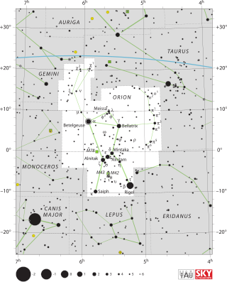
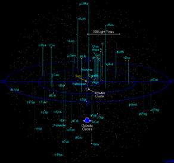
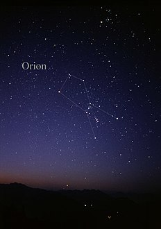
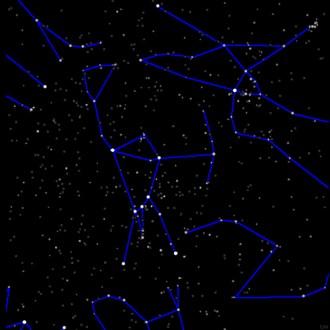
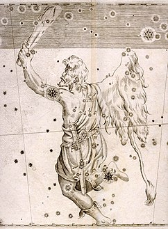
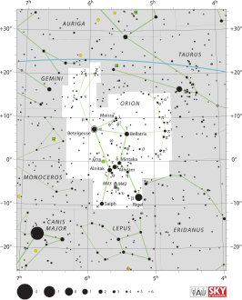
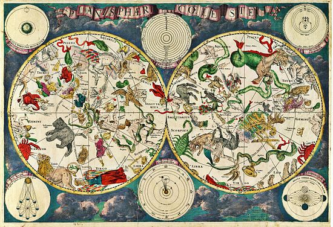

3. Համաստեղություններ
Հայկական լեռնաշխարհում
Հայկական լեռնաշխարհի բնակիչների աստղային երկնքի նկատմամբ հետաքրքրության մասին են վկայում ավելի քան 3 հազարամյակի վաղեմության՝ համաստեղություններ պատկերող բազմաթիվ ժայռապատկերներ։ Աստղագոտին, որով անցնում է Արեգակի տարեկան ուղին (խավարածիր), հին ժողովուրդները բաժանել են 12 համաստեղությունների (Խոյ, Ցուլ, Երկվորյակներ, Խեցգետին, Առյուծ, Կույս, Կշեռք, Կարիճ, Աղեղնավոր, Այծեղջյուր, Ջրհոս, Ձկներ)։ Աստղագոտին անվանել են Կենդանաշրջան, իսկ դրա համաստեղությունները՝ կենդանակերպ։ Անանիա Շիրակացու աշխատություններում բերված է յուրաքանչյուր կենդանակերպում երևացող աստղերի քանակը։ Միջնադարյան մի շարք թարգմանական և հայկական բնագրային աշխատություններում հեղինակները, հետևելով Պլատոնին, տվել են կենդանակերպի ու մարդու մարմնի մասերի «համապատասխանության» նկարներ և դրանց բացատրությունները։ Հայտնի է, որ միջնադարում բախտագուշակները պետությունների և մարդկանց ճակատագրերը, պատերազմները և երկրային այլ երևույթներ կապել են համաստեղությունների և լուսատուների հետ։ Սակայն հայ տոմարագետ-աստղագետները (սկսած Անանիա Շիրակացուց, որն այդ բոլորը համարել է «բարբաջանք») հանդես են եկել աստղագուշակության դեմ։ Նրանք բացատրել են կենդանակերպի անունները՝ նկատի ունենալով, թե դրանցից յուրաքանչյուրում Արեգակի գտնվելը ինչ ազդեցություն է գործում Երկրի վրա։ Այսպես, ըստ Հակոբ Ղրիմեցու, Խոյ է կոչվում գարնան առաջին կենդանակերպը, քանի որ «խոյը ծննդական է», և Արեգակը, այդ կենդանակերպում գտնվելիս, «Երկիրը շարժում է ծննդականության»։ Առյուծ կենդանակերպում գտնվելիս Արեգակն այնպես է հզորանում, որ կարող է նույնիսկ վնաս պատճառել մարդկանց։ Արեգակի՝ Ձկներ կենդանակերպում գտնվելու ժամանակ, առատ ձնհալի հետևանքով Երկիրը ձկան նման լողում է ջրի մեջ ևն։ Երևանի Մատենադարանի ձեռագրերում պահպանվել են կենդանակերպերի նկարներ և այլ համաստեղությունների վերաբերյալ տեղեկություններ։ Համաստեղությունների դիցաբանական անուններն ունեն իրենց հայկական համարժեքները (Օրիոն՝ Հայկ, Հերկուլես՝ Վահագն ևն)։ Համաստեղությունների փոխդասավորության, անվանումների և աստղերի աստղային մեծությունների մասին տեղեկություններ կան «Համատարած աշխարհացոյց» և «Աստղալից երկինք» քարտեզներում։ Համաստեղություններ, ժամանակակից աստղագիտության մեջ երկնակամարի տեղամասեր, որոնց բաժանված է աստղային երկինքը, նրանում հեշտորեն կողմնորոշվելու համար։։

Կարճ նկարագիր
Երկնակամարում իրարից փոքր անկյունային հեռավորության վրա գտնվող աստղերը եռաչափ տարածության մեջ կարող են դասավորված լինել իրարից շատ հեռու։ Մի համաստեղության մեջ երևացող աստղերը կարող են և՛ մոտ լինել և՛ շատ հեռու ու իրար հետ ոչ մի կապ չունենալ։ Հնադարում մարդիկ տեսնում էին աստղերի դասավորվածության մեջ որոշակի համակարգվածություն և ըստ դրա ձևավոր համաստեղություններ։ Ժամանակի ընթացքում դիտորդները տեսել են տարբեր համաստեղություններ և նրանց ուրվագծերը, և նրանց անվանումներից շատերի բացատրությունը մինչ այժմ պարզ չէ։ Մինչև XIX դարը համաստեղությունը հասկացվում էր որպես աստղերի որոշակի խումբ, ոչ թե երկնակամարի մի հատված։ Այդ դեպքում ստացվում էր, որ նույն աստղը կարող էր պատկանել 2 տարբեր համաստեղության, իսկ տարածքները, որտեղ աստղերի քանակը քիչ էր համաստեղության չէր պատկանում։
1922 թվականին Հռոմում Միջազգային աստղագիտական միության I Գլխավոր ասամբլեայի որոշմամբ վերջնականապես որոշվեց երկնակամարի բաժանման 88 համստեղությունների ցանկը։ 1928 թվականին որոշվեց համաստեղությունների միանշանակ և հստակ սահմանները, գծված 1875 ժամանակաշրջանի ընդունված երկնային կոորդինատների հասարակածային համակարգում հաստատուն ուղղակի ծագման և թեքության գծերով։
Հինգ տարվա ընթացքում ահմաններն անընդհատ ճշտվում էին։ 1935 թվականին համաստեղությունների սահմանները վերջնականապես հաստատվեցին, իսկ աստղագետները պայամանավորվեցին այլևս չփոփոխել։

Համաստեղությունների աստղերը գտնվում են Արեգակից տարբեր հեռավորության վրա։

Օրիոնի համաստեղության աստղերը, որոնք երևում են անզեն աչքով։

Օրիոնի կերպարը ստեղծող աստղերի խմբավորումը։

Օրիոնի համաստեղության ուրվագիծը Ուրանաչափության ատլասում (1603 թվական)

Օրիոնի համաստեղության ժամանակակից սահմանները։
88 համաստեղություններից միայն 48-ն են հնադարյան, նրանց անուններն ու աստղերը (բայց ոչ պատկերումը) ընդգրկված են Կլավդիոս Պտղոմեոսի «Ալմագեստ» կատալոգում, որն ապրել է II դարում։
Նրանք ընդգրկում են այն տարածքները որ տեսանելի է Եվրոպայի հարավից։ Ավելի վաղ Պտղոմեոսի պատկերած համաստեղությունները կարելի է գտնել աս-Սուֆի «Անշարժ աստղերի գիրք» աշխատությունում։ Նա ապրել է 903-998 թվականները։ Մյուս ժամանակակից համաստեղությունները մտցվել են XVII—XVIII դարերում, հարավային երկնքի ուսումնասիրման և հյուսիսային երկնքի «դատարկ տեղերի» լրացման արդյունքում։ Համաստեղությունները կարող են անվանվել իրական կամ հնարված կենդանիների անուններով (Մեծ Արջ, Առյուծ, Վիշապ), հունական առասպելների հերոսների անուններով (Կասիոպեա, Անդրոմեդա) կամ առարկաների անուններով, որոնց հիշեցնում է աստղերի դասավորությունը (Կշեռք, Հյուսիսային Թագ)։
12 համաստեղություններ ավանդաբար անվանում են Կենդանակերպեր, որոնցով անցնում է Արեգակի կենտրոնը տարվա ընթացքում՝ արեգակնածիրը (Խավարածիր)։ Նոյեմբերի 30-ից դեկտեմբերի 17-ը (2014 ժամանակաշրջան) Արեգակը գտնվում է Օձակրի համաստեղությունում։ Այդ համաստեղությունը նույնպես Կենդանակերպ է, սակայն սնահավատությունը (թիվը-13, կենդանին-օձ) թույլ չտվեց աստղագուշակներին դասել համաստեղությունը այդ շարքում։

Հոլանդական քարտեզագրի XVII դարի աստղային երկնքի քարտեզը։

Մեծ Արջի համաստեղությունը Յան Գավելի ատլասում